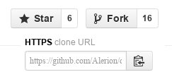

Как сделать pull request
22 Август 2013
В продолжение серии коротких заметок, ибо длинные полотна писать, увы, недосуг. В узком кругу автора этих строк имеются товарищи весьма и весьма далёкие от мира железок, интернета и open source (в общем, они пропустили всё самое интересное). Не далее как на прошлой неделе угораздило таки употребить при них непотребное словосочетание «pull request», после чего, ловя недоумённые взгляды, пришлось мяться и придумывать как сие получше перевести на великий и могучий. Увы, к взаимопониманию это не привело: попробую ответить здесь.
Pull Request — запрос на включение. На включение написанного вами кода в чужой репозиторий.
С чего начать?
А для начала этот самый репозиторий нужно форкнуть (fork — вилка, ответвление). Разберём это нехитрое действо на примере веб-сервиса для хостинга IT-проектов, название которому GitHub. Разумеется, кроме GitHub есть и другие: BitBucket, например. Выбирать по вкусу.
Примечание: для успешного проведения нижеизложенных операций у вас (что естественно) должен быть установлен git. Если это условие ещё не выполнено, шагом марш на вводное руководство!
Заходим на страницу интересующего проекта, жмём кнопку Fork, ищем на своей странице URL для клонирования.

В консоли в зависимости от входных данных набираем нечто подобное:
$ git clone git@github.com/username/django_documentation.git
Отлично. Уже можно вносить свои изменения в код проекта.
Тот репозиторий, что теперь лежит на вашем жёстком диске, независим от основного. В нём отслеживаются только ваши наработки. Но как следить за изменениями, происходящими в первоисточнике, откуда вы «стянули» репозиторий? Добавить удаленный репозиторий в отслеживаемые. Например, так:
$ git remote -v
origin git@github.com:username/django_documentation.git (fetch)
origin git@github.com:username/django_documentation.git (push)
$ git remote add upstream git@github.com:Alerion/django_documentation.git
После добавления upstream в отслеживаемые, наберите команду git remote -v ещё раз, вы должны увидеть произошедшие изменения.
Давайте посмотрим как сливать изменения из оригинального репозитория к себе в случае, если разработка в нём ушла вперёд пока вы сосредоточенно писали коммиты:
$ git pull upstream master
From github.com:Alerion/django_documentation
* branch master -> FETCH_HEAD
Updating 66f032e..062b294
Fast-forward
djbook/commands/authors.py | 65 ++--
djbook/deps.txt | 6 ++--
djbook/templates/authors.html | 14 ++--
djbook/templates/base.html | 7 ++--
locale/ru/LC_MESSAGES/faq/install.po | 94 +++-
locale/ru/LC_MESSAGES/faq/usage.po | 49 +---
locale/ru/LC_MESSAGES/howto/outputting-csv.po | 61 ++--
locale/ru/LC_MESSAGES/topics/cache.po | 77 ++--
locale/ru/LC_MESSAGES/topics/db/multi-db.po | 80 +++-
9 files changed, 290 insertions(+), 163 deletions(-)
У нас есть основной репозиторий — master и недавно добавленный нами upstream. Команда, данная выше, забирает всё новое из репозитория upstream и сливает изменения в master. Так, мы всегда можем получить последние наработки.
Вы можете также воспользоваться другой командой — fetch вместо указанной pull. В таком случае git заберет изменения с удаленного репозитория, но не будет пытаться слить их с вашей текущей веткой автоматически.
Что такое ветки?
Чаще всего ветки (branch — ответвление, ветвь, филиал) бывают тематическими. Например, при общей разработке, когда у всех участников есть право записи в репозиторий. В этом случае ветки используются для отделения изменений, сделанных одним из разработчиков, от общего репозитория. Ветки могут пригодиться и в случае с созданием pull-request'а.
Создание ветки происходит довольно просто. Находясь в каталоге с проектом, наберите следующие команды:
$ git branch -a # отобразить все ветки
* master
remotes/origin/1.4
remotes/origin/HEAD -> origin/master
remotes/origin/master
remotes/upstream/1.4
remotes/upstream/master
$ git checkout -b new_branch # создать новую ветку, переключиться на неё
Находясь в только что созданной ветке, вы можете приступить к работе. Вносите в код свои изменения, а когда закончите просто переключитесь обратно, к своей основной ветке. Вы можете отправить pull request, выбрав ветку new_branch или же прежде слить изменения из неё в основную ветку разработки. Рассмотрим это подробнее:
$ git checkout master # вернуться к основной ветке
$ git merge new_branch # слить изменения из new_branch
Если нужно отправить в свой удалённый репозиторий вновь созданную ветку (не сливать её с master), делаем следующее:
$ git push master new_branch
Не торопитесь сливать изменения. Если что-то не заладилось, созданную ветку можно удалить:
$ git branch -d new_branch # удалить локально
$ git push master :new_branch # и в удалённом репозитории
Отправляем изменения
Добрались таки до ответа на поставленный вопрос: что такое pull request, зачем оно нужно и как его достичь. Как предложить владельцу репозитория свои изменения?
Для этого зайдите в свой аккаунт, выбирайте репозиторий владельца и ищите небольшую зелёную кнопку (на момент написания поста она была таковой, если даже что-то изменится, думаю, найти её будет несложно).
Перед тем как сделать запрос вы имеете возможность добавить комментарий, просмотреть то, какие файлы будут изменены, какие коммиты добавлены. В верхнем углу окна добавления запроса обратите внимание откуда куда и что вы сливаете. Если необходимо слить основные ветки выбор падёт на репозиторий username:master, если отдельную ветку (вспоминаем branch) — так и указывайте её.
{kind=link}
А дальше... ждать. Пока придёт владелец оригинального репозитория и примет/отклонит ваши изменения.
Ну вот, мы его достигли. Просветления то есть :)
А подробнее?
Ну, что ещё? Применительно к github'у можно отметить факт наличия у них Issues. Это такая «примочка», благодаря которой можно ставить задачи для проекта, давать им описание и метку, определяющую к какому разряду данная задача относится (закрытие бага или написание фичи), а ещё назначать ответственного за выполнение определённого issue: всё как у больших.
Итогов подводить не стану. Для заинтересованных лиц ссылочка на хорошую книгу: Pro Git pdf
Примечание: указанному в примере репозиторию требуется влить кубометр свежей крови. Присоединяйтесь к переводу документации.